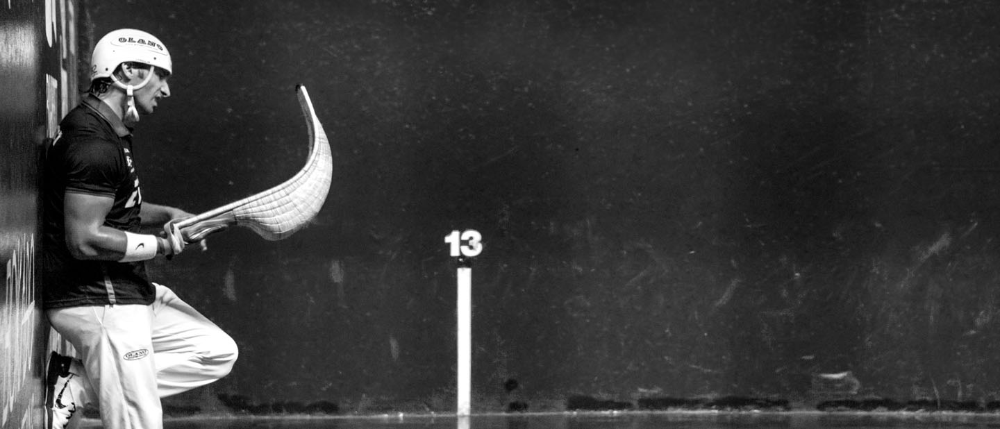

Nor gara?
Tolosako pilota kirol elkartean sartu zareten modukoak gara. Hemen, gure burua, gure kideak, eta gure helburuak aurki dezakezu
Gure Kirol Elkartea
Gure elkartea ez da inondik sortua; da, baina, gure herriko sinesmenak, kultura, eta tradizioak bildu ditu. 1960. urtean jaio zen, Tolosako kaleetan eta frontoietan, herri honetan pelota kirola sustatzeko ardura hartuz. Gure taldea oso antzinatik ere lan egiten ari da, eta pelota kirola Tolosan bizi dugun errealitatearen hainbat parte osatzen dugu.

Gure kideak
Gure elkarteko kideak oso anitzak eta aniztasun handia dute. Haien artean jokalari gazteak, betiko kideak, entrenatzaileak eta herriko kirola maite dutenak aurki daitezke. Guztiek elkartean bat egiten dute, denak helburu berdinekin: gure kultura eta pelota kirola sustatzea. Hori dela eta, hemen aurkituko duzu lagun onak, ikasle zintzoak, eta gure herriaren kirola maite duten guztiak.
Gure helburuak
Gure helburu nagusia Tolosan pelota kirola bultzatzea eta sendotzea da. Ez dugu soilik kirol hau praktikatzen, baizik eta gure herria eta herriaren identitatea indartzen. Talde lanetan parte hartu, lagunak aurki, eta herriko kirol tradizioa bultzatu nahi dugu. Gure helburua da Tolosan pelota kirola bizirik mantentzea, bai orain eta etorkizunean ere.